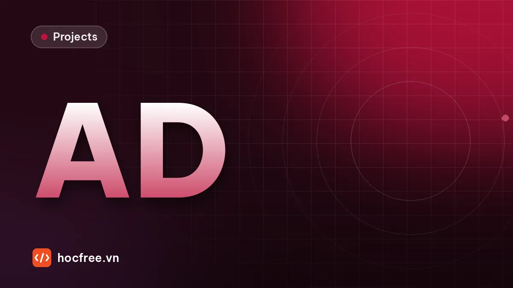

Dự án: phát hiện lỗi bề mặt bằng PatchCore, chỉ học từ ảnh OK
PatchCore hoàn chỉnh trên dữ liệu kiểu MVTec AD: ngưỡng từ ảnh OK, AUROC, escape/overkill theo loại lỗi, bản đồ nhiệt và đóng gói mô hình.

Học xong bài này, bạn sẽ
- Huấn luyện chỉ với ảnh OK
- Chọn ngưỡng điểm bất thường
- Hiển thị bản đồ nhiệt vùng lỗi
Nên học trước: Anomaly detection: học từ ảnh OK với PaDiM, PatchCore
Nội dung bài viết
Đây là dự án cuối chặng 12. Bài "Anomaly detection: học từ ảnh OK với PaDiM, PatchCore" đã giải thích vì sao học từ ảnh OK là khả thi, cách PatchCore xây memory bank, chọn coreset và chấm điểm bằng láng giềng gần nhất. Dự án này ghép tất cả thành một hệ thống hoàn chỉnh như sẽ giao cho nhà máy: đọc dữ liệu theo cấu trúc thư mục chuẩn của bộ MVTec AD, huấn luyện chỉ bằng ảnh OK, chọn ngưỡng OK/NG chỉ từ ảnh OK kiểm định, đánh giá bằng AUROC cấp ảnh và cấp pixel cùng escape/overkill theo từng loại lỗi, xuất bản đồ nhiệt cho người vận hành, đóng gói mô hình (memory bank + ngưỡng + cấu hình) thành một file, nạp lại và kiểm tra cho kết quả y hệt, đo thời gian mỗi ảnh. Lời giải chạy được ngay trên dữ liệu vải dệt tổng hợp; đổi một đường dẫn và bật backbone pretrained là chạy trên một lớp của MVTec AD thật. Sau dự án này, chặng 13 "Triển khai" bắt đầu với bài "Xuất ONNX và kiểm tra kết quả khớp PyTorch".
train/good, in bảng đánh giá (AUROC ảnh, AUROC pixel, escape/overkill theo loại lỗi ở ngưỡng chọn từ ảnh OK), lưu ảnh bản đồ nhiệt có viền vùng vượt ngưỡng, lưu file mô hình nạp lại được và một báo cáo JSON. Bài thực hành: chạy trên một lớp của MVTec AD, báo cáo AUROC và ví dụ bản đồ nhiệt.1. Yêu cầu
| Hạng mục | Yêu cầu | Tiêu chí đạt |
|---|---|---|
| Dữ liệu | Đọc cấu trúc MVTec AD: train/good, test/good, test/<loại lỗi>, ground_truth/<loại lỗi>/*_mask.png | Chạy được với mọi lớp MVTec AD và với dữ liệu nhà máy sắp xếp cùng cấu trúc |
| Huấn luyện | Chỉ dùng ảnh OK; tách 20% train/good làm tập kiểm định OK | Không ảnh test nào (OK hay NG) được dùng khi huấn luyện hay chọn ngưỡng |
| Mô hình | PatchCore: đặc trưng mảnh từ CNN cố định, memory bank, coreset, khoảng cách láng giềng gần nhất | Tỉ lệ coreset là tham số cấu hình; ghi rõ backbone (ngẫu nhiên hay pretrained) |
| Ngưỡng | Chọn từ phân bố điểm của tập kiểm định OK | Quy tắc chọn ngưỡng ghi trong báo cáo; xác minh bằng ảnh NG của tập test |
| Đánh giá | AUROC cấp ảnh, AUROC cấp pixel, escape và overkill tại ngưỡng, theo từng loại lỗi | Bảng số kèm số mẫu |
| Bản đồ nhiệt | Ảnh chồng bản đồ nhiệt + viền vùng vượt ngưỡng cho ảnh OK và mỗi loại lỗi | Người vận hành nhìn là thấy vì sao sản phẩm bị loại |
| Đóng gói | Lưu memory bank, ngưỡng, cấu hình, trọng số backbone vào một file; nạp lại cho cùng điểm số | Sai khác điểm số sau khi nạp lại không đáng kể (dưới 1e-4), quyết định OK/NG trùng 100% |
| Hiệu năng | Đo thời gian xử lý một ảnh (trích đặc trưng + tìm láng giềng) | Ghi phần cứng; so với cycle time giả định 200 ms |
2. Kiến thức sử dụng
- PatchCore, PaDiM, coreset, đặt ngưỡng từ ảnh OK, các trường hợp anomaly detection thất bại: bài "Anomaly detection: học từ ảnh OK với PaDiM, PatchCore".
- AUROC, escape, overkill, chọn ngưỡng theo chi phí, đo cycle time: bài "Chọn ngưỡng và đánh giá theo escape, overkill, cycle time" (chặng 11).
- Đặc trưng CNN, feature map, receptive field: bài "Mạng nơ-ron và CNN hoạt động thế nào"; tensor và
torch.no_grad: bài "PyTorch cơ bản: tensor, autograd, vòng lặp huấn luyện" (chặng 10). - IoU, Dice trên mặt nạ, so sánh với phân đoạn có giám sát: các bài phân đoạn của chặng này.
- Đọc ghi ảnh, phóng to, làm mượt, colormap, contour bằng OpenCV.
3. Gợi ý thiết kế
- Tách cấu hình khỏi code: một dict
CAU_HINHchứa kích thước ảnh, backbone, tỉ lệ coreset, sigma làm mượt, quy tắc ngưỡng. Lưu nó cùng mô hình; trạm phải dùng đúng cấu hình đã nghiệm thu. - Một hàm tiền xử lý dùng chung cho huấn luyện, đánh giá và chạy thật (đọc xám hay màu, resize, chuẩn hóa). Tiền xử lý khác nhau giữa hai lúc là lỗi kinh điển.
- Tập kiểm định OK tách từ train: MVTec AD không có tập val; nếu chọn ngưỡng trên
test/goodthì kết quả test không còn khách quan. - Điểm cấp ảnh = max bản đồ sau khi làm mượt; làm mượt giảm điểm nóng đơn lẻ do nhiễu.
- Bản đồ nhiệt chuẩn hóa theo ngưỡng (không theo min–max từng ảnh): nếu chuẩn hóa min–max, ảnh OK cũng có "vùng đỏ" và người vận hành mất niềm tin. Chia bản đồ cho ngưỡng: giá trị 1 là ngưỡng, trên 1 là bất thường.
- Đánh giá theo loại lỗi: AUROC chung có thể che giấu một loại lỗi bị lọt hoàn toàn.
4. Lời giải
Xem lời giải đầy đủ
Bước 1. Dữ liệu theo cấu trúc MVTec AD
Ta sinh một "lớp" mới tên vai_det: vải dệt có vân ô lặp lại chu kỳ 6 px, lệch pha ngẫu nhiên giữa các tấm (vải không bao giờ nằm đúng một vị trí), độ sáng từng tấm dao động nhẹ. Ba loại lỗi: xuoc (sợi kéo sáng, mảnh), dom_ban (vết bẩn tối, biên mềm), soi_dut (một dải mất vân dệt, độ sáng gần như nền, lỗi khó nhất). Cấu trúc thư mục giống hệt MVTec AD, nên code đọc dữ liệu dùng được nguyên vẹn cho bộ thật.
from pathlib import Path
import cv2
import numpy as np
S = 128
GOC = Path("mvtec_gia/vai_det")
rng = np.random.default_rng(0)
yy, xx = np.mgrid[0:S, 0:S]
def tam_vai(rng):
p = rng.uniform(0, 2 * np.pi, 2)
van = 22 * np.sin(2 * np.pi * xx / 6 + p[0]) * np.sin(2 * np.pi * yy / 6 + p[1])
return 128 + van + rng.normal(0, 5, (S, S)) + rng.normal(0, 3)
def them_loi(img, loai, rng):
m = np.zeros((S, S), np.uint8)
if loai == "xuoc":
p = rng.integers(15, S - 15, 2)
g = rng.uniform(0, np.pi)
q = (p + rng.uniform(15, 35) * np.array([np.cos(g), np.sin(g)])).astype(int).clip(2, S - 3)
cv2.line(m, tuple(int(v) for v in p), tuple(int(v) for v in q), 1, 1)
img = np.where(m > 0, img + 30, img) # sợi kéo sáng hơn ~30 mức xám
elif loai == "dom_ban":
c = tuple(int(v) for v in rng.integers(15, S - 15, 2))
cv2.ellipse(m, c, (int(rng.integers(2, 6)), int(rng.integers(2, 6))), 0, 0, 360, 1, -1)
img = img - 25 * cv2.GaussianBlur(m.astype(np.float32), (5, 5), 0)
else: # soi_dut: dải mất vân dệt
x0, y0 = int(rng.integers(10, S - 40)), int(rng.integers(10, S - 10))
cv2.rectangle(m, (x0, y0), (x0 + int(rng.integers(18, 32)), y0 + int(rng.integers(1, 4))), 1, -1)
img = np.where(m > 0, 128 + rng.normal(0, 5, (S, S)), img)
return img, m
def luu(duong_dan, a):
duong_dan.parent.mkdir(parents=True, exist_ok=True)
cv2.imwrite(str(duong_dan), np.clip(a, 0, 255).astype(np.uint8))
for i in range(60):
luu(GOC / "train/good" / f"{i:03d}.png", tam_vai(rng))
for i in range(30):
luu(GOC / "test/good" / f"{i:03d}.png", tam_vai(rng))
for loai in ("xuoc", "dom_ban", "soi_dut"):
for i in range(12):
img, m = them_loi(tam_vai(rng), loai, rng)
luu(GOC / "test" / loai / f"{i:03d}.png", img)
luu(GOC / "ground_truth" / loai / f"{i:03d}_mask.png", m * 255)
for p in sorted({f.parent.relative_to(GOC) for f in GOC.rglob("*.png")}):
print(f"{str(p):22s} {len(list((GOC / p).glob('*.png'))):3d} ảnh")ground_truth/dom_ban 12 ảnh
ground_truth/soi_dut 12 ảnh
ground_truth/xuoc 12 ảnh
test/dom_ban 12 ảnh
test/good 30 ảnh
test/soi_dut 12 ảnh
test/xuoc 12 ảnh
train/good 60 ảnhBước 2. Cấu hình, tiền xử lý và đọc dữ liệu
from pathlib import Path
import cv2
import numpy as np
CAU_HINH = {
"lop": "vai_det",
"kich_thuoc": 128, # ảnh được resize về kích thước này (MVTec thật: 224 hoặc 256)
"backbone": "cnn_ngau_nhien_seed0",
"ti_le_coreset": 0.05,
"sigma_lam_muot": 2.0,
"quy_tac_nguong": "max(val OK) x 1.05",
"ti_le_val": 0.2,
}
def tien_xu_ly(duong_dan):
"""Dùng chung cho huấn luyện, đánh giá và chạy thật."""
a = cv2.imread(str(duong_dan), cv2.IMREAD_GRAYSCALE)
n = CAU_HINH["kich_thuoc"]
return cv2.resize(a, (n, n), interpolation=cv2.INTER_AREA) if a.shape != (n, n) else a
def doc_mvtec(goc):
goc = Path(goc)
tat_ca = sorted((goc / "train/good").glob("*.png"))
n_val = int(len(tat_ca) * CAU_HINH["ti_le_val"])
thu_tu = np.random.default_rng(0).permutation(len(tat_ca))
val = [tat_ca[i] for i in thu_tu[:n_val]]
train = [tat_ca[i] for i in thu_tu[n_val:]]
test = [] # (đường dẫn, loại, đường dẫn mặt nạ hoặc None)
for thu_muc in sorted((goc / "test").iterdir()):
for f in sorted(thu_muc.glob("*.png")):
mn = None if thu_muc.name == "good" else goc / "ground_truth" / thu_muc.name / f"{f.stem}_mask.png"
test.append((f, thu_muc.name, mn))
return train, val, test
train_ds, val_ds, test_ds = doc_mvtec("mvtec_gia/vai_det")
X_train = np.stack([tien_xu_ly(p) for p in train_ds])
X_val = np.stack([tien_xu_ly(p) for p in val_ds])
X_test = np.stack([tien_xu_ly(p) for p, _, _ in test_ds])
loai_test = np.array([l for _, l, _ in test_ds])
n = CAU_HINH["kich_thuoc"]
M_test = np.stack([np.zeros((n, n), bool) if mp is None else
cv2.resize(cv2.imread(str(mp), 0), (n, n), interpolation=cv2.INTER_NEAREST) > 127
for _, _, mp in test_ds])
print(f"train OK {len(X_train)} | val OK {len(X_val)} | test {len(X_test)} "
f"({', '.join(f'{l} {int((loai_test == l).sum())}' for l in np.unique(loai_test))})")train OK 48 | val OK 12 | test 66 (dom_ban 12, good 30, soi_dut 12, xuoc 12)Bước 3. Bộ trích đặc trưng mảnh
Hai tầng có stride 4 và 8 (giống layer2, layer3 của ResNet về vai trò), ghép lại ở cùng độ phân giải, gom láng giềng 3×3. Ảnh 128×128 cho lưới 32×32 = 1024 vector mỗi ảnh.
import numpy as np
import torch
import torch.nn.functional as F
from torch import nn
torch.set_num_threads(2)
torch.manual_seed(0)
backbone = nn.ModuleDict({
"tang1": nn.Sequential(nn.Conv2d(1, 32, 3, padding=1), nn.ReLU(), nn.AvgPool2d(2),
nn.Conv2d(32, 64, 3, padding=1), nn.ReLU(), nn.AvgPool2d(2)), # stride 4
"tang2": nn.Sequential(nn.Conv2d(64, 64, 3, padding=1), nn.ReLU(), nn.AvgPool2d(2)), # stride 8
}).eval() # khởi tạo ngẫu nhiên, KHÔNG huấn luyện
CHUAN = {"tb": float(X_train.mean()), "lc": float(X_train.std())}
@torch.no_grad()
def dac_trung(imgs, bb=backbone, chuan=CHUAN):
x = (torch.from_numpy(np.asarray(imgs)).float()[:, None] - chuan["tb"]) / chuan["lc"]
f1 = bb["tang1"](x)
f2 = F.interpolate(bb["tang2"](f1), size=f1.shape[-2:], mode="bilinear", align_corners=False)
return F.avg_pool2d(torch.cat([f1, f2], 1), 3, stride=1, padding=1) # (N, 128, n/4, n/4)
f = dac_trung(X_train[:2])
print("đặc trưng 2 ảnh:", tuple(f.shape), "→", f.shape[2] * f.shape[3], "vector mảnh mỗi ảnh")đặc trưng 2 ảnh: (2, 128, 32, 32) → 1024 vector mảnh mỗi ảnhTrên máy có Internet, thay bằng backbone pretrained. Giao diện giữ nguyên: nhận ảnh, trả tensor (N, C, h, w). Ảnh xám được lặp thành 3 kênh và chuẩn hóa theo thống kê ImageNet:
# (minh họa) cần tải trọng số pretrained; dùng cho MVTec AD và ảnh thật
import numpy as np
import torch
import torch.nn.functional as F
from torchvision.models import Wide_ResNet50_2_Weights, wide_resnet50_2
from torchvision.models.feature_extraction import create_feature_extractor
CAU_HINH.update(kich_thuoc=224, backbone="wide_resnet50_2_imagenet_layer2_layer3")
trich = create_feature_extractor(wide_resnet50_2(weights=Wide_ResNet50_2_Weights.IMAGENET1K_V1).eval(),
return_nodes={"layer2": "l2", "layer3": "l3"})
TB_IMAGENET = torch.tensor([0.485, 0.456, 0.406])[:, None, None]
LC_IMAGENET = torch.tensor([0.229, 0.224, 0.225])[:, None, None]
@torch.no_grad()
def dac_trung(imgs):
x = torch.from_numpy(np.asarray(imgs)).float()[:, None].repeat(1, 3, 1, 1) / 255
f = trich((x - TB_IMAGENET) / LC_IMAGENET)
l3 = F.interpolate(f["l3"], size=f["l2"].shape[-2:], mode="bilinear", align_corners=False)
return F.avg_pool2d(torch.cat([f["l2"], l3], 1), 3, stride=1, padding=1) # (N, 1536, 28, 28)Với ảnh màu (nhiều lớp MVTec AD có màu), đọc ảnh bằng cv2.IMREAD_COLOR, đổi BGR sang RGB và bỏ bước lặp kênh. Vector 1536 chiều làm bank lớn và chậm; bài báo PatchCore còn giảm chiều bằng phép chiếu ngẫu nhiên khi chọn coreset, như hàm ở bước 4 đã làm.
Bước 4. Memory bank, coreset và chấm điểm
import time
import cv2
import numpy as np
import torch
import torch.nn.functional as F
def coreset(bank, ti_le, seed=0):
"""Tham lam k-center trên phép chiếu ngẫu nhiên 32 chiều (như bài lý thuyết)."""
n = max(1, int(len(bank) * ti_le))
luong = torch.get_num_threads()
torch.set_num_threads(1)
g = torch.Generator().manual_seed(seed)
z = bank @ (torch.randn(bank.shape[1], 32, generator=g) / 32 ** 0.5)
zz = (z * z).sum(1)
chon = [int(torch.randint(len(bank), (1,), generator=g))]
dmin = zz - 2 * (z @ z[chon[0]]) + zz[chon[0]]
for _ in range(n - 1):
i = int(dmin.argmax())
chon.append(i)
dmin = torch.minimum(dmin, zz - 2 * (z @ z[i]) + zz[i])
torch.set_num_threads(luong)
return bank[chon].clone()
def ban_do(imgs, bank, lo=64):
"""Bản đồ bất thường ở độ phân giải ảnh, đã làm mượt; điểm ảnh = max bản đồ."""
kq = []
for i in range(0, len(imgs), lo): # chia lô để không tốn RAM
f = dac_trung(imgs[i:i + lo])
N, C, h, w = f.shape
d = torch.cdist(f.permute(0, 2, 3, 1).reshape(-1, C), bank).min(1).values.reshape(N, 1, h, w)
m = F.interpolate(d, size=imgs.shape[-2:], mode="bilinear", align_corners=False)[:, 0].numpy()
kq += [cv2.GaussianBlur(a, (0, 0), CAU_HINH["sigma_lam_muot"]) for a in m]
bd = np.stack(kq)
return bd, bd.reshape(len(bd), -1).max(1)
t0 = time.perf_counter()
f_train = dac_trung(X_train)
bank_day_du = f_train.permute(0, 2, 3, 1).reshape(-1, f_train.shape[1])
bank = coreset(bank_day_du, CAU_HINH["ti_le_coreset"])
print(f"memory bank {len(bank_day_du):,} → coreset {len(bank):,} vector × {bank.shape[1]} chiều "
f"({bank.numel() * 4 / 1e6:.2f} MB); huấn luyện mất {time.perf_counter() - t0:.1f} s")memory bank 49,152 → coreset 2,457 vector × 128 chiều (1.26 MB); huấn luyện mất 1.6 s(Thời gian phụ thuộc máy.) "Huấn luyện" PatchCore chỉ là một lần trích đặc trưng và chọn coreset, không có gradient, không có epoch.
Bước 5. Chọn ngưỡng chỉ từ ảnh OK kiểm định
Quy tắc trong cấu hình: ngưỡng = điểm lớn nhất của tập val OK nhân hệ số an toàn 1,05. In thêm percentile để thấy phân bố.
import numpy as np
_, s_val = ban_do(X_val, bank)
NGUONG = float(s_val.max() * 1.05)
print(f"val OK ({len(s_val)} ảnh): trung vị {np.median(s_val):.3f}, p95 {np.percentile(s_val, 95):.3f}, "
f"max {s_val.max():.3f}")
print(f"ngưỡng = max × 1.05 = {NGUONG:.3f}")val OK (12 ảnh): trung vị 0.066, p95 0.075, max 0.080
ngưỡng = max × 1.05 = 0.085Chỉ 12 ảnh kiểm định là quá ít cho sản xuất (bài lý thuyết: với N ảnh OK, quy tắc "max" cho overkill kỳ vọng khoảng 1/(N+1)); ở nhà máy cần hàng trăm ảnh OK trải đều các lô. Hệ số 1,05 là vùng đệm nhỏ cho biến động chưa thấy trong val, đánh đổi bằng nguy cơ lọt lỗi nhẹ; bước 6 cho biết cái giá đó.
Bước 6. Đánh giá trên tập test
import numpy as np
from sklearn.metrics import roc_auc_score
bd_test, s_test = ban_do(X_test, bank)
la_ng = loai_test != "good"
print(f"AUROC cấp ảnh : {roc_auc_score(la_ng, s_test):.3f} ({la_ng.sum()} NG / {(~la_ng).sum()} OK)")
print(f"AUROC cấp pixel: {roc_auc_score(M_test.ravel(), bd_test.ravel()):.3f} "
f"({M_test.sum():,} pixel lỗi / {M_test.size:,} pixel)")
bao_ng = s_test >= NGUONG
print(f"\nTại ngưỡng {NGUONG:.3f}:")
print("loại | số ảnh | AUROC (vs test OK) | báo NG | kết quả")
for loai in np.unique(loai_test):
k = loai_test == loai
if loai == "good":
print(f"{loai:9s} | {k.sum():6d} | {'':18s} | {bao_ng[k].sum():6d} | overkill {bao_ng[k].mean():.1%}")
else:
chon = k | ~la_ng
auc = roc_auc_score(la_ng[chon], s_test[chon])
print(f"{loai:9s} | {k.sum():6d} | {auc:18.3f} | {bao_ng[k].sum():6d} | escape {1 - bao_ng[k].mean():.1%}")
print(f"tổng: escape {np.mean(~bao_ng[la_ng]):.1%} ({(~bao_ng[la_ng]).sum()}/{la_ng.sum()}), "
f"overkill {np.mean(bao_ng[~la_ng]):.1%} ({bao_ng[~la_ng].sum()}/{(~la_ng).sum()})")AUROC cấp ảnh : 0.965 (36 NG / 30 OK)
AUROC cấp pixel: 0.978 (1,861 pixel lỗi / 1,081,344 pixel)
Tại ngưỡng 0.085:
loại | số ảnh | AUROC (vs test OK) | báo NG | kết quả
dom_ban | 12 | 1.000 | 12 | escape 0.0%
good | 30 | | 0 | overkill 0.0%
soi_dut | 12 | 0.894 | 8 | escape 33.3%
xuoc | 12 | 1.000 | 11 | escape 8.3%
tổng: escape 13.9% (5/36), overkill 0.0% (0/30)Đọc bảng như một kỹ sư nghiệm thu:
- Vết bẩn dễ nhất: điểm cao gấp nhiều lần ngưỡng, không lọt ảnh nào.
- Sợi kéo có AUROC 1,000 nhưng vẫn lọt 1/12 ảnh. AUROC chỉ nói điểm của mọi ảnh lỗi cao hơn mọi ảnh OK trong tập test; ngưỡng thì được chọn từ val OK cộng vùng đệm 5%, và một sợi kéo ngắn, mờ có điểm nằm giữa max của test OK và ngưỡng. Đây là ví dụ cụ thể vì sao báo cáo cho nhà máy phải là escape/overkill ở ngưỡng chạy thật, không phải AUROC.
- Sợi đứt khó nhất (AUROC khoảng 0,89, lọt 4/12): dải mất vân có độ sáng gần bằng nền, chỉ khác ở kết cấu, và dải mỏng 1–3 px nhỏ hơn bước lưới đặc trưng (4 px). Muốn bắt tốt hơn cần đặc trưng tốt hơn (backbone pretrained), độ phân giải cao hơn (ảnh lớn hơn hoặc cắt ô), hoặc chiếu sáng làm nổi kết cấu (đèn chiếu xiên, chặng 6).
- AUROC cấp pixel cao cho thấy bản đồ định vị đúng vùng lỗi, kể cả ở các ảnh lọt về mặt quyết định.
Ngưỡng là quyết định của kỹ sư. So sánh vài quy tắc, tất cả vẫn chỉ tính từ val OK:
import numpy as np
print("quy tắc | ngưỡng | escape test | overkill test")
for ten, T in (("max val × 1.05", NGUONG), ("max val", s_val.max()), ("p95 val", np.percentile(s_val, 95))):
esc, ovk = np.mean(s_test[la_ng] < T), np.mean(s_test[~la_ng] >= T)
print(f"{ten:16s} | {T:6.3f} | {esc:5.1%} ({int(np.sum(s_test[la_ng] < T)):2d}/36) | "
f"{ovk:5.1%} ({int(np.sum(s_test[~la_ng] >= T))}/30)")quy tắc | ngưỡng | escape test | overkill test
max val × 1.05 | 0.085 | 13.9% ( 5/36) | 0.0% (0/30)
max val | 0.080 | 11.1% ( 4/36) | 0.0% (0/30)
p95 val | 0.075 | 8.3% ( 3/36) | 16.7% (5/30)Hạ ngưỡng bắt thêm lỗi nhưng bắt đầu loại nhầm hàng tốt; với chỉ 12 ảnh val, percentile 95 là con số rất bất định (nó gần như là ảnh lớn thứ hai). Cách làm ở nhà máy: thu hàng trăm ảnh OK kiểm định để ngưỡng ổn định, chọn quy tắc theo chi phí escape so với overkill (bài "Chọn ngưỡng và đánh giá theo escape, overkill, cycle time"), rồi theo dõi các ảnh NG thu được trên dây chuyền để điều chỉnh. Phần còn lại của lời giải giữ quy tắc "max × 1,05" trong cấu hình.
Bước 7. Bản đồ nhiệt cho người vận hành
Bản đồ được chia cho ngưỡng rồi cắt ở 2 (giá trị 1 = đúng ngưỡng), tô màu, chồng lên ảnh, vẽ viền đỏ quanh vùng vượt ngưỡng. Mỗi hàng: một ảnh OK và một ảnh mỗi loại lỗi; cột: ảnh gốc, mặt nạ thật, bản đồ nhiệt có viền.
import cv2
import numpy as np
def anh_ket_luan(img, bd, nguong):
goc = cv2.cvtColor(img, cv2.COLOR_GRAY2BGR)
chuan = np.clip(bd / nguong / 2, 0, 1) # 0.5 trên thang màu = ngưỡng
nhiet = cv2.applyColorMap((chuan * 255).astype(np.uint8), cv2.COLORMAP_JET)
ra = cv2.addWeighted(goc, 0.55, nhiet, 0.45, 0)
vung = (bd >= nguong).astype(np.uint8)
cv2.drawContours(ra, cv2.findContours(vung, cv2.RETR_EXTERNAL, cv2.CHAIN_APPROX_SIMPLE)[0], -1, (0, 0, 255), 1)
kl = "NG" if bd.max() >= nguong else "OK"
cv2.putText(ra, f"{kl} {bd.max() / nguong:.2f}", (3, 12), cv2.FONT_HERSHEY_SIMPLEX, 0.4, (255, 255, 255), 1)
return ra
hang = []
for loai in ("good", "xuoc", "dom_ban", "soi_dut"):
k = int(np.flatnonzero(loai_test == loai)[0])
mn = cv2.cvtColor(M_test[k].astype(np.uint8) * 255, cv2.COLOR_GRAY2BGR)
hang.append(cv2.hconcat([cv2.cvtColor(X_test[k], cv2.COLOR_GRAY2BGR), mn, anh_ket_luan(X_test[k], bd_test[k], NGUONG)]))
print(f"{loai:8s}: điểm/ngưỡng = {s_test[k] / NGUONG:.2f} → {'NG' if s_test[k] >= NGUONG else 'OK'}")
cv2.imwrite("ban_do_nhiet_vai.png", cv2.resize(cv2.vconcat(hang), None, fx=2, fy=2))
print("đã lưu ban_do_nhiet_vai.png")good : điểm/ngưỡng = 0.80 → OK
xuoc : điểm/ngưỡng = 1.24 → NG
dom_ban : điểm/ngưỡng = 8.43 → NG
soi_dut : điểm/ngưỡng = 1.26 → NG
đã lưu ban_do_nhiet_vai.pngẢnh OK gần như xanh toàn bộ, không có viền: nhờ chuẩn hóa theo ngưỡng chứ không theo min–max từng ảnh. Ở ảnh lỗi, vùng vượt ngưỡng (viền đỏ) nằm đúng trên vết lỗi thật; với lỗi sát ngưỡng như sợi kéo và sợi đứt ở đây (điểm/ngưỡng khoảng 1,2–1,3), chỉ phần mạnh nhất của vết vượt ngưỡng nên viền nhỏ hơn vết, còn vết bẩn rõ thì viền bao trọn. Ở trạm, ảnh này được lưu cùng kết quả NG để người vận hành xác nhận và để làm dữ liệu cải thiện mô hình.
Bước 8. Đóng gói, nạp lại và đo thời gian
Một file chứa mọi thứ trạm cần: trọng số backbone, thống kê chuẩn hóa, memory bank, ngưỡng, cấu hình. Nạp lại vào một backbone mới và kiểm tra điểm số trùng khớp tuyệt đối.
import json
import time
import numpy as np
import torch
from torch import nn
torch.save({"backbone": backbone.state_dict(), "chuan": CHUAN, "bank": bank, "nguong": NGUONG,
"cau_hinh": CAU_HINH}, "patchcore_vai_det.pt")
goi = torch.load("patchcore_vai_det.pt", weights_only=True)
bb2 = nn.ModuleDict({
"tang1": nn.Sequential(nn.Conv2d(1, 32, 3, padding=1), nn.ReLU(), nn.AvgPool2d(2),
nn.Conv2d(32, 64, 3, padding=1), nn.ReLU(), nn.AvgPool2d(2)),
"tang2": nn.Sequential(nn.Conv2d(64, 64, 3, padding=1), nn.ReLU(), nn.AvgPool2d(2)),
}).eval()
bb2.load_state_dict(goi["backbone"])
def kiem_tra(img, goi=goi, bb=bb2):
"""Hàm chạy ở trạm: một ảnh → (kết luận, điểm/ngưỡng, bản đồ)."""
f = dac_trung(img[None], bb, goi["chuan"])
C, h, w = f.shape[1:]
d = torch.cdist(f.permute(0, 2, 3, 1).reshape(-1, C), goi["bank"]).min(1).values.reshape(1, 1, h, w)
m = torch.nn.functional.interpolate(d, size=img.shape, mode="bilinear", align_corners=False)[0, 0].numpy()
bd = cv2.GaussianBlur(m, (0, 0), goi["cau_hinh"]["sigma_lam_muot"])
ti_so = float(bd.max() / goi["nguong"])
return ("NG" if ti_so >= 1 else "OK"), ti_so, bd
s_nap_lai = np.array([kiem_tra(a)[1] * goi["nguong"] for a in X_test])
print(f"sai khác điểm số lớn nhất sau khi nạp lại: {np.abs(s_nap_lai - s_test).max():.1e} | "
f"quyết định OK/NG trùng: {np.mean((s_nap_lai >= NGUONG) == (s_test >= NGUONG)):.0%}")
for a in X_test[:3]:
kiem_tra(a) # khởi động (warm-up)
t = []
for a in X_test[:40]:
t0 = time.perf_counter()
kiem_tra(a)
t.append((time.perf_counter() - t0) * 1000)
print(f"thời gian / ảnh: p50 {np.percentile(t, 50):.1f} ms, p99 {np.percentile(t, 99):.1f} ms (phụ thuộc máy)")
bao_cao = {"cau_hinh": CAU_HINH, "nguong": round(NGUONG, 4), "so_anh": {"train": len(X_train), "val_ok": len(X_val),
"test": len(X_test)}, "auroc_anh": round(float(roc_auc_score(la_ng, s_test)), 4),
"escape": round(float(np.mean(~bao_ng[la_ng])), 4), "overkill": round(float(np.mean(bao_ng[~la_ng])), 4)}
open("bao_cao_vai_det.json", "w", encoding="utf-8").write(json.dumps(bao_cao, ensure_ascii=False, indent=1))
print("đã lưu patchcore_vai_det.pt và bao_cao_vai_det.json")sai khác điểm số lớn nhất sau khi nạp lại: 6.6e-07 | quyết định OK/NG trùng: 100%
thời gian / ảnh: p50 14.1 ms, p99 17.0 ms (phụ thuộc máy)
đã lưu patchcore_vai_det.pt và bao_cao_vai_det.jsonSai khác chỉ cỡ một phần triệu (do chấm từng ảnh thay vì theo lô làm thứ tự cộng số thực khác đi) và mọi quyết định OK/NG trùng nhau: gói mô hình đầy đủ, không phụ thuộc biến nào còn nằm trong bộ nhớ của phiên huấn luyện. Nếu sai khác lớn (ví dụ 1e-2) là dấu hiệu thiếu một thành phần, thường là thống kê chuẩn hóa hoặc tiền xử lý. Thời gian mỗi ảnh nhỏ xa so với cycle time 200 ms giả định; với WideResNet-50 ở 224 px trên CPU, thời gian lớn hơn nhiều, phần trích đặc trưng chiếm phần lớn, nên phải đo trên phần cứng đích (chặng 13 tối ưu bằng ONNX Runtime, OpenVINO).
Bước 9. Chạy trên MVTec AD thật (bài thực hành)
- Tải MVTec AD từ trang của MVTec (đăng ký, giấy phép CC BY-NC-SA 4.0, chỉ dùng phi thương mại). Chọn một lớp kết cấu như
carpet,grid,leather,tilehoặcwood(PatchCore mạnh nhất ở nhóm này), hoặc một lớp vật thể nhưbottle. - Thay khối bước 3 bằng khối backbone pretrained (đặt
kich_thuoc224), đổi đường dẫn ở bước 2 thành thư mục lớp, ví dụdoc_mvtec("mvtec_ad/carpet"). Với lớp có màu, đọc ảnh màu như ghi chú ở bước 3. - Chạy lại bước 4–8. Bank với 1536 chiều lớn hơn nhiều: giảm
ti_le_coreset(1–10%) nếu chậm, và chia lô nhỏ hơn khi chấm điểm nếu thiếu RAM. - Báo cáo: AUROC cấp ảnh, AUROC cấp pixel, escape/overkill theo loại lỗi ở ngưỡng chọn từ val OK, ảnh bản đồ nhiệt của một ảnh OK và mỗi loại lỗi, thời gian/ảnh và phần cứng.
Để đối chiếu, thư viện anomalib có sẵn PatchCore với đầy đủ chi tiết của bài báo. Ví dụ theo API anomalib 2.x (API thay đổi giữa các phiên bản lớn, luôn đối chiếu tài liệu đúng phiên bản bạn cài; pip install anomalib):
# (minh họa) cần anomalib và tải trọng số pretrained
from anomalib.data import Folder
from anomalib.engine import Engine
from anomalib.models import Patchcore
datamodule = Folder(
name="carpet",
root="mvtec_ad/carpet",
normal_dir="train/good",
abnormal_dir="test/color", # một thư mục lỗi; lặp lại cho các loại khác
mask_dir="ground_truth/color",
)
model = Patchcore(coreset_sampling_ratio=0.1) # mặc định backbone wide_resnet50_2, layer2 + layer3
engine = Engine()
engine.fit(model=model, datamodule=datamodule)
engine.test(model=model, datamodule=datamodule) # in AUROC, F1 cấp ảnh và cấp pixelKết quả của anomalib và của lời giải tự viết (với cùng backbone pretrained) nên cùng cỡ; khác biệt nhỏ đến từ các chi tiết như điều chỉnh điểm theo mật độ láng giềng, kích thước ảnh, cách cắt giữa ảnh. Lưu ý cách anomalib chọn ngưỡng mặc định: đọc tài liệu để biết nó dùng dữ liệu nào, như bài lý thuyết đã cảnh báo.
5. Tự đánh giá
| Tiêu chí | Đạt khi | Tự chấm |
|---|---|---|
| Chỉ học từ ảnh OK | Không ảnh test nào được dùng khi xây bank hay chọn ngưỡng; tập val OK tách từ train | |
| Ngưỡng có căn cứ | Quy tắc ngưỡng ghi rõ, tính từ val OK, có xác minh escape/overkill trên test | |
| Đánh giá đầy đủ | AUROC ảnh, AUROC pixel, escape/overkill theo từng loại lỗi, kèm số mẫu | |
| Bản đồ nhiệt dùng được | Chuẩn hóa theo ngưỡng, ảnh OK không có vùng đỏ, vùng lỗi trùng mặt nạ thật | |
| Đóng gói tái lập | Một file mô hình, nạp lại cho sai khác điểm số không đáng kể và quyết định trùng 100%; cấu hình và backbone ghi trong file | |
| Hiệu năng | Đo p50, p99 thời gian/ảnh có warm-up, ghi phần cứng, so với cycle time | |
| Phân tích điểm yếu | Chỉ ra loại lỗi khó nhất và lý do; nêu được trường hợp mô hình sẽ thất bại (lỗi logic, đổi ánh sáng) | |
| MVTec AD thật | Chạy trên ít nhất một lớp với backbone pretrained, báo AUROC và ví dụ bản đồ nhiệt |
6. Mở rộng
- So sánh với PaDiM trên cùng dữ liệu (dùng code của bài lý thuyết): vải lệch pha ngẫu nhiên giữa các tấm, PaDiM theo vị trí sẽ chịu thiệt; giải thích bằng kết quả.
- Quét tỉ lệ coreset 1%, 5%, 10%, 25%: vẽ bảng AUROC, escape/overkill và ms/ảnh; chọn tỉ lệ nhỏ nhất không làm xấu kết quả.
- Ảnh lớn: chia ảnh camera thành ô có chồng lấn, chạy từng ô, ghép bản đồ; so với resize cả ảnh về 224 px đối với lỗi nhỏ.
- Thử thách độ bền: tạo tập "đèn sáng hơn 10%", "mờ nhẹ do rung", "lệch pha vân", đo tỉ lệ báo NG; thêm bước chuẩn hóa độ sáng và đo lại.
- Xuất ONNX phần trích đặc trưng, giữ memory bank dạng mảng NumPy, viết hàm tìm láng giềng gần nhất bằng NumPy; so điểm số với bản PyTorch (bài đầu tiên của chặng 13).
- Giám sát trôi dữ liệu: ghi điểm của mọi ảnh OK theo ca, cảnh báo khi trung vị tăng quá 20% so với lúc nghiệm thu.
- Kết hợp có giám sát: khi đã thu được vài chục ảnh NG từ dây chuyền, huấn luyện U-Net hoặc YOLO26-seg cho các loại lỗi cần đo kích thước, giữ PatchCore làm lưới an toàn bắt lỗi lạ.
Tóm tắt
- Hệ thống anomaly detection hoàn chỉnh gồm: đọc dữ liệu theo cấu trúc chuẩn, tiền xử lý dùng chung, trích đặc trưng mảnh từ CNN cố định, memory bank + coreset, bản đồ bất thường làm mượt, điểm ảnh = max.
- Ngưỡng lấy từ tập val OK tách từ train, không dùng ảnh test; đánh giá bằng AUROC ảnh, AUROC pixel và escape/overkill theo từng loại lỗi.
- Bản đồ nhiệt chuẩn hóa theo ngưỡng, có viền vùng vượt ngưỡng, là thứ người vận hành cần.
- Đóng gói backbone, chuẩn hóa, bank, ngưỡng, cấu hình vào một file; nạp lại phải cho cùng điểm số (sai khác cỡ làm tròn số thực) và cùng quyết định; đo thời gian có warm-up trên phần cứng đích.
- Với ảnh thật bắt buộc dùng backbone pretrained; anomalib là lựa chọn thực tế để đối chiếu và triển khai.
Chặng tiếp theo: Triển khai, bắt đầu với bài "Xuất ONNX và kiểm tra kết quả khớp PyTorch".
Bài tập thực hành
- Chạy dự án trên một lớp của bộ MVTec AD, báo cáo AUROC và ví dụ bản đồ nhiệt.
Làm xong bài tập mới chuyển sang bài tiếp theo: tự viết code là cách duy nhất để nhớ lâu.